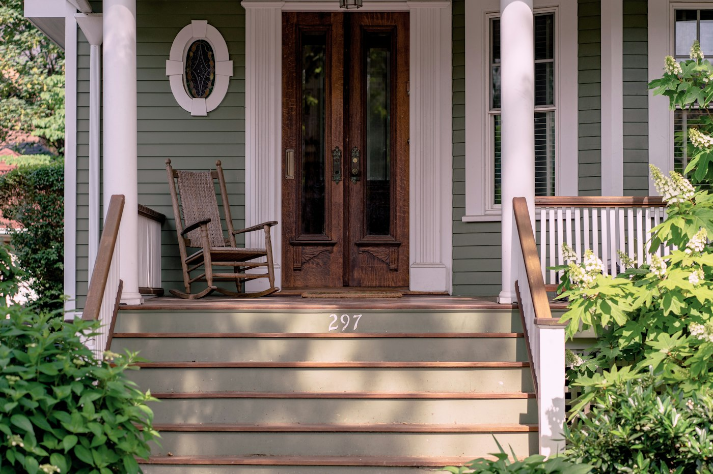

Huerkamp Home Group
Free guide
How to buy a home you can afford, with a payment that fits your budget, from a Ramsey Endorsed Local Provider.
Free guide from a Ramsey Endorsed Local Provider
Huerkamp Home Group has been a Dave Ramsey Endorsed Local Provider for more than 15 years. Many of our clients follow Ramsey's plan, and buying a home the Ramsey way looks a little different: the goal is a home that builds wealth instead of stress.
This guide lays out Ramsey Solutions' published guidance for buying a home and how we put it into practice in the Twin Cities. See our Ramsey ELP page. Questions? Call or text us at (612) 502-7653.
Before you buy
Ramsey's plan puts buying a home after paying off all consumer debt and saving a full emergency fund of three to six months of expenses. Owning a home brings surprise repairs; the emergency fund keeps them from turning into new debt.
Ramsey Solutions recommends putting down at least 10%, and ideally 20% or more so you avoid private mortgage insurance. First-time buyers may choose 5% to 10% under their guidance, as long as the payment still fits.
Ramsey's rule of thumb: your total monthly housing payment, including principal, interest, property taxes, insurance and any HOA fee, should be no more than 25% of your take-home pay on a 15-year fixed mortgage.
Ramsey recommends a 15-year fixed-rate loan: a higher monthly payment than a 30-year loan, but far less interest over the life of the loan and a paid-off home much sooner. Run both on our mortgage calculator.
Property taxes, insurance, utilities, maintenance and repairs come on top of the payment. In Minnesota, property taxes vary a lot by city; see property taxes by county before you choose where to look.
Shopping the Ramsey way
A lender may approve you for more than fits a 25% payment. Decide your top price from your budget first, and shop below it so you have room for the unexpected.
Write down what you truly need (bedrooms, location, commute) and what would be nice. A smaller or older home with a payment you can manage beats a dream home that strains every month.
Two homes at the same price can cost very different amounts each month because of property taxes, HOA fees and utilities. Compare the full monthly cost, not just the price.
A few hundred dollars on an inspection, a radon test and, for older homes, a sewer scope can save thousands. It also protects your emergency fund.
After you buy
Closing often uses a lot of cash. Rebuild your emergency fund quickly, because the first year in a home is when surprises show up.

Once you are debt-free otherwise, extra payments toward principal shorten the loan and save interest. Ask your lender how to make principal-only payments.
In Minnesota, apply with your county assessor for homestead classification to lower your property taxes; apply by December 15 for it to count the next year.
Selling the Ramsey way
Before listing, figure out your net after the payoff and selling costs with our seller net proceeds calculator, so your next home fits the same budget rules.
An honest price, set from recent sales, sells faster and avoids the cost of carrying the home while it sits. We price from local sales and explain every number.
Ready when you are
Huerkamp Home Group has helped buyers and sellers across the Twin Cities since 2002, and has been a Dave Ramsey Endorsed Local Provider for more than 15 years.
Sources
Photos: 2H Media (cover), charlesdeluvio and Avi Werde on Unsplash. General information, not legal, tax or lending advice. Rules and programs change; confirm details with your lender, title company, tax adviser or attorney. Huerkamp Home Group is a team of licensed REALTORS® with Keller Williams Preferred Realty. Equal Housing Opportunity.